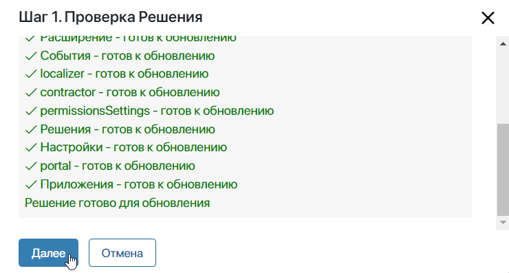
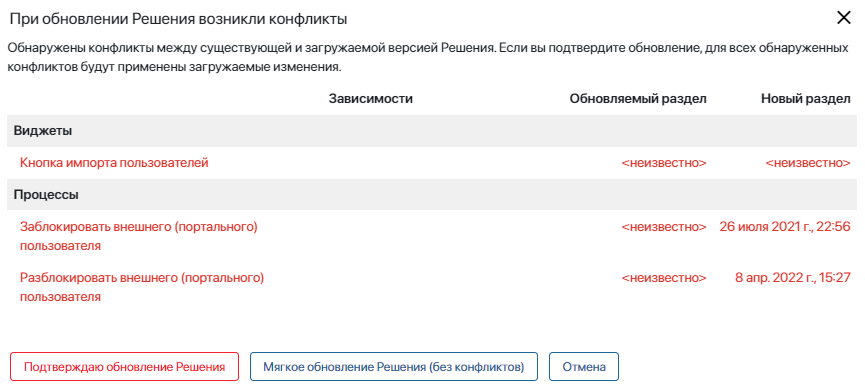
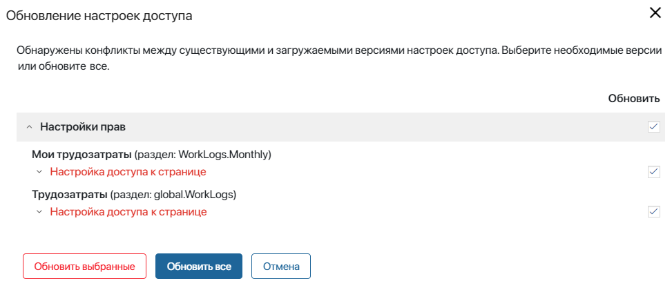
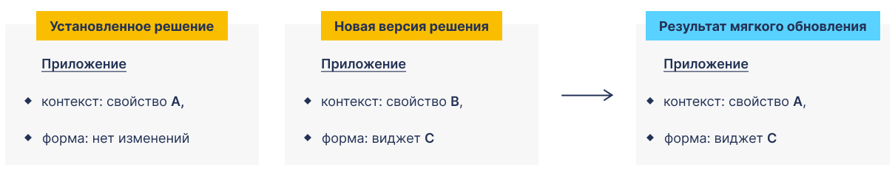
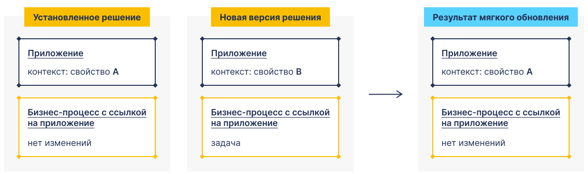
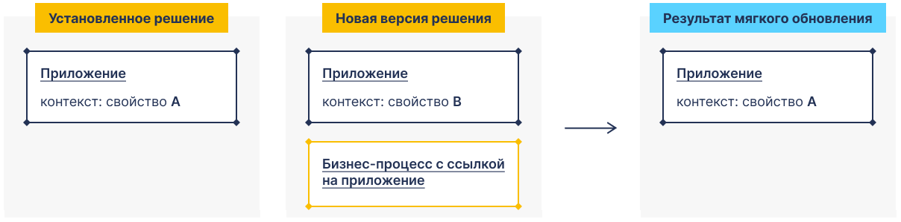

Опция используется для импорта изменений в уже установленное решение. Если вы редактировали компоненты решения, обновить его можно двумя способами:
- установить полностью обновлённую версию, не сохраняя ваши настройки;
- выбрать опцию мягкого обновления. Тогда компоненты, которые были изменены, не обновятся. Компоненты, настройки которых вы не меняли — обновятся.
В исходную или обновлённую версии решения могут входить новые компоненты — дополнительные разделы, приложения или модули.
Для обеспечения целостности решения, мы не рекомендуем удалять из состава решения компоненты. Это может привести к неконсистентности разделов, опциональных зависимостей и связей в структурах внутри решения. Например, после обновления может произойти дублирование разделов. Нарушенная целостность повлияет на дальнейшие процессы экспорта, импорта и обновления решения, в которых могут возникнуть ошибки.
Если вам необходимо удалить раздел или модуль из решения, обратите внимание на следующее:
- Перед удалением проверьте в решении наличие внутренних ссылок на удаляемый раздел или модуль.
- Учитывайте влияние удаления на созданные опциональные зависимости от других решений.
- Если в решение необходимо повторно добавить раздел или модуль, рекомендуем не удалять эти компоненты, а скрыть раздел из левого меню или выключить модуль.
Начать обновление решения
Чтобы выполнить обновление:
- Перейдите к началу этого процесса одним из двух способов:
- если решение импортировано из ELMA365 Store, его можно обновить, установив из каталога повторно.
В карточке решения на вкладке Версии также можно ознакомиться со списком обновлений и скачать файл формата .е365 с актуальной версией решения;
- загрузите файл формата .e365 с локального компьютера или из файлов системы и нажмите Далее.
Важно: если в ELMA365 On-Premises вы загружаете решение, созданное или изменённое в более новой версии системы (например, 2024.4), чем ваша текущая версия (например, 2024.1), появится предупреждение. Обновление может не выполниться или решение может работать некорректно, т. к. в более новой версии могут быть изменения, несовместимые с вашей версией. Выберите, отменить или продолжить процесс обновления.
- Запустится проверка компонентов загружаемой версии решения из файла. Если будут обнаружены ошибки, например, найдены одинаковые страницы или в версию добавлены зависимости от другого решения, вы не сможете закончить обновление.
Если в новой версии решения есть приложения, виджеты или бизнес-процессы, поля из которых ссылаются на приложения из лицензируемых системных решений, вы увидите уведомление об этом. Вы можете продолжить обновление решения, однако для корректной работы потребуется активировать лицензию используемого системного решения.
При успешной проверке решения нажмите кнопку Далее.

- Затем загруженная версия сравнивается с существующим в системе решением. Если вы вносили изменения в компоненты решения, например, меняли форму приложения или изменяли бизнес-процесс, отобразится список конфликтов. Выберите дальнейшее действие:
- подтвердите обновление решения. Тогда новая версия решения полностью заменит существующую. Ваши изменения не сохранятся;
- выполните мягкое обновление;
- отмените обновление.

- Если на целевой площадке редактировались права доступа к разделу, приложению или странице в составе решения, вы увидите список несоответствий с правами, настроенными в загружаемой версии.
Выберите, какие настройки прав вы хотите обновить, отметьте их и нажмите кнопку Обновить выбранные. Вы также можете обновить все найденные несоответствия или отменить процесс обновления.

При обновлении могут возникнуть «ложные» конфликты настроек доступа
История изменений прав доступа сохраняется, начиная с версии системы 2024.1, и может отсутствовать в существующих решениях. Тогда в строке конфликта отобразится значение <Неизвестно>, т. е. по текущим правам истории изменений нет. В такой строке настройки прав можно как обновить, так и не обновлять, т. е. игнорировать. Чтобы «ложный» конфликт не возникал, экспортируйте решение в версии системы не ниже 2024.1. В процессе экспорта история изменений запишется в структуру прав доступа существующего в системе решения. |
Мягкое обновление решения
Вы можете использовать этот вариант обновления, если возникли конфликты между установленной и новой версией решения. Опция позволяет сохранить изменения, которые вы внесли в такие компоненты, как бизнес-процессы, приложения, их формы, страницы и виджеты, модули. В процессе мягкого обновления:
- компоненты с конфликтами не обновятся, ваши изменения сохранятся;
- другие составляющие решения обновятся, если их нет в списке конфликтов и они не содержат ссылки на компоненты с конфликтами;
- новые составляющие решения добавятся, если они не содержат ссылки на компоненты с конфликтами.
Рассмотрим примеры.
Кейс 1. Конфликт в компоненте решения
Вы добавили свойство А в контекст приложения, которое входит в состав решения. В новой версии решения:
- в контекст этого приложения добавлено свойство В;
- на форму создания приложения вынесен виджет С.
Результат мягкого обновления:
- Возникнет конфликт в приложении, оно не обновится. Свойство В не добавится в его контекст, свойство А сохранится.
- Форма создания приложения обновится, в ней не будет конфликта. Виджет С добавится.

Кейс 2. Ссылка на компонент с конфликтом
Исходное решение содержит:
- приложение, в контекст которого вы добавили свойство А;
- бизнес-процесс, в котором есть переменная, которая ссылается на это приложение.
В новой версии решения в контекст приложения добавлено свойство В, а на схему процесса добавлена задача.
Результат мягкого обновления:
- Возникнет конфликт в приложении, оно не обновится. Свойство В не добавится в его контекст, свойство А сохранится.
- Бизнес-процесс не обновится, т. к. он ссылается на приложение, в котором возник конфликт.

Кейс 3. Новый компонент решения содержит ссылку на компонент с конфликтом
Вы добавили свойство А в контекст приложения, которое входит в состав решения.
В новой версии решения:
- в контекст приложения добавлено свойство В;
- добавлен новый процесс, который ссылается на это приложение.
Результат мягкого обновления:
- Возникнет конфликт в приложении, оно не обновится. Свойство В не добавится в его контекст, свойство А сохранится.
- Новый бизнес-процесс не добавится, т. к. он ссылается на приложение с конфликтом.

Мягкое обновление заблокированного раздела
Если решение содержит заблокированный раздел, мягкое обновление игнорирует зависимости между этим разделом и разблокированным разделом, в котором найдены конфликты. В этом случае компоненты заблокированного раздела (приложения, процессы, виджеты) обновятся.
Рассмотрим особенности такого обновления. Компоненты заблокированного раздела:
- обновятся, если они ссылаются на компоненты разблокированного раздела, в которых найдены конфликты;
- обновятся, если на них ссылаются компоненты разблокированного раздела, в которых найдены конфликты;
- НЕ обновятся, если в них самих обнаружены конфликты;
- НЕ обновятся, если есть зависимости между ними и компонентами другого заблокированного раздела, в которых найдены конфликты.
Разберём кейс на примере решения КЭДО, которое содержит заблокированный раздел КЭДО и доступный для внесения изменений раздел Настройки КЭДО:
- В установленной версии решения на уровне раздела Настройки КЭДО добавим задачу в процесс, который ссылается на приложение заблокированного раздела КЭДО.
- Предположим, что в новой версии решения:
- на уровне раздела КЭДО в контекст приложения, которое связано с изменённым процессом, добавлено свойство А;
- на уровне раздела Настройки КЭДО в контекст процесса, который мы изменили, добавлено свойство В.
- Запустим обновление решения.
- На этапе его проверки отобразятся конфликты в процессе, который изменён на уровне раздела Настройки КЭДО. В этом конфликте мы увидим зависимости с приложением в заблокированном разделе КЭДО.
- Применим мягкое обновление решения и получим следующий результат:
- приложение на уровне заблокированного раздела КЭДО обновится, свойство А добавится в контекст приложения. Найденные в конфликте зависимости будут проигнорированы;
- процесс на уровне разблокированного раздела Настройки КЭДО не обновится. Задача в нём сохранится, свойство В не добавится в контекст процесса.